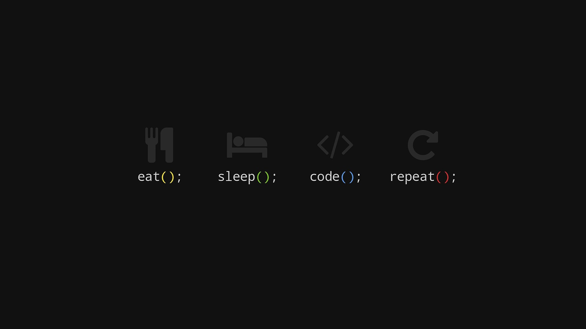

Introdução
 Estudando sobre os computadores desde os meus 10 anos de idade , cada vez mais buscando conhecimento.
Familiarizado na criação de sites com HTML / CSS / JavaScript , tenho conhecimento básico em Phython / C / Java / PHP / Ruby on Rails.
Usuário do sistema operacional Windows e Ubuntu , com conhecimento sobre os ambientes e suas configurações.
Fiz intercâmbio para o Canadá durante 6 meses , o que me deixou confortável com o inglês tanto na leitura quanto na conversação em nível avançado.

 Estagiário na Receita Federal por 2 anos.
Estagiário na Receita Federal por 2 anos. Estagiário na empresa de Programação Web Bluefish por 3 meses.
Estagiário na empresa de Programação Web Bluefish por 3 meses.